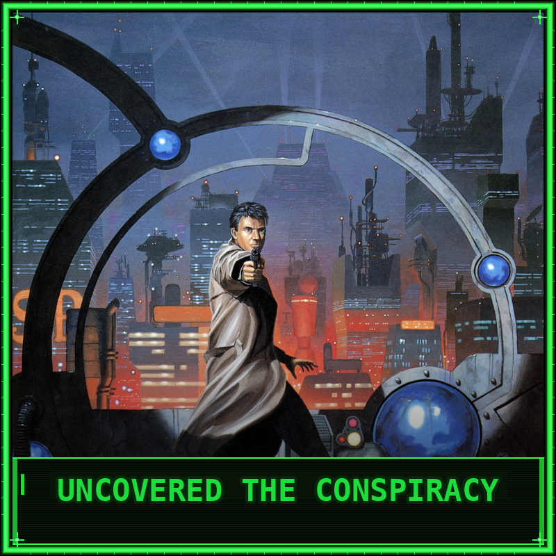
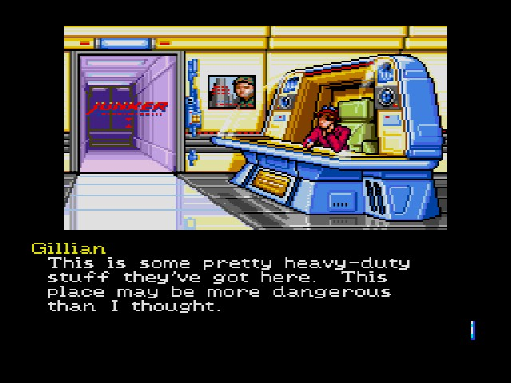
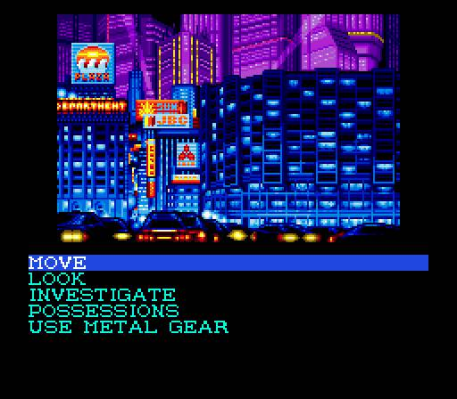
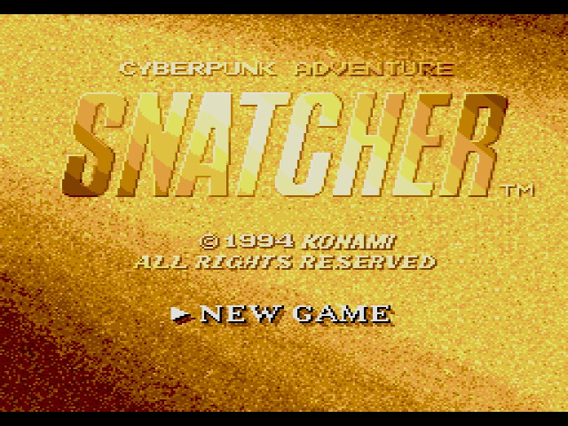
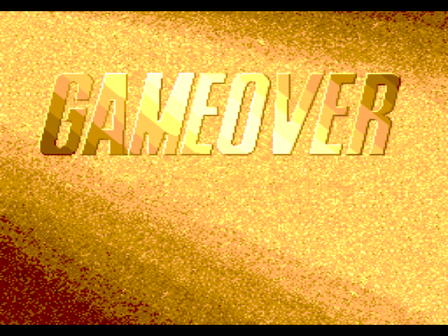

Snatcher
A cinematic cyberpunk adventure directed by Hideo Kojima. You play as Gillian Seed, an amnesiac investigating humanoid robots called "Snatchers" that kill humans and replace them in society. Heavily influenced by Blade Runner and The Terminator, the game features a text-menu interface, static visuals with animations, and action segments with light gun support. Known for its mature storytelling and atmospheric presentation.
.png)
| Platform | Sega CD |
|---|---|
| Genre | Cyberpunk Graphic Adventure |
| Released | |
| Developer | Konami |
| Publisher | Konami |
| Available | Sega CD (out of production) |
Where to Play
About This Game
Snatcher is a cyberpunk graphic adventure created by Hideo Kojima, originally released for Japanese home computers in 1988 before receiving its definitive English localization on the Sega CD in 1994. Heavily inspired by Blade Runner and The Terminator, the game follows Gillian Seed, an amnesiac agent investigating bioroid infiltrators called "Snatchers" who kill humans and assume their identities. Kojima poured his love of cinema into every frame—the game features voice acting, an atmospheric soundtrack by Konami's in-house composers, and a noir-drenched narrative that was far ahead of its time.
The Sega CD version is notorious for being one of the rarest and most expensive games for the platform, with complete copies regularly selling for hundreds of dollars. Konami produced a very limited English run, and the game never received another official Western release. Despite its obscurity, Snatcher is widely regarded as one of the finest adventure games ever made and a key work in Kojima's career—containing many thematic seeds that would later bloom in Metal Gear Solid, including unreliable narrators, philosophical monologues, and fourth-wall-breaking moments.
Did You Know?
- Kojima's Blade Runner obsession — The game's setting, Neo Kobe City, borrows heavily from Blade Runner's Los Angeles. Kojima has openly acknowledged the influence, and the game's opening text crawl mirrors the structure of Ridley Scott's film almost beat for beat.
- Metal Gear cameos everywhere — Gillian's robot companion is literally named Metal Gear mk. II, a direct reference to the Metal Gear series. The Sega CD version also features shooting sequences throughout the game using a light-gun style interface, and Kojima peppered references to his other works across the experience.
- The original release was unfinished — The 1988 PC-88/MSX2 version of Snatcher only contained Acts 1 and 2. The full three-act story wasn't completed until the 1992 PC Engine remake, and the Sega CD localization is one of the only ways to experience the complete narrative in English.
- One of the rarest Sega CD games — Complete copies of the Sega CD version regularly sell for $800 or more. Konami's extremely limited Western print run, combined with the game's cult status and Kojima's fame, has made it one of the most sought-after retro games in existence.
Critical Reception
Accolades
- #7 Best Sega CD Game of All Time — Retro Gamer, 2010
- Top 100 Games of All Time — IGN, 2005
- Best Adventure Sega CD Game — GameFan, 1995
Club Achievements

Beat the Game
GoldOther Participants
No participants yet.
Speedrun Records
Snatcher's speedrun scene is niche but dedicated. Since the game is largely text-driven, runs focus on optimal menu navigation, text advancement speed, and efficient action sequence execution. The Sega CD version's load times add an extra layer of optimization.
Soundtrack
Composed by Konami Kukeiha Club (Masahiro Ikariko, Mutsuhiko Izumi, et al.)
The Snatcher soundtrack is a masterclass in cyberpunk atmosphere. Mixing synth-heavy compositions with jazz fusion and eerie ambient textures, the score perfectly captures the rain-soaked noir of Neo Kobe City. The Sega CD version features enhanced Red Book audio that sounds remarkably rich for the hardware.
Notable Tracks
- One Night in Neo Kobe City
- Theme of Snatcher (Opening)
- Pleasure of Tension
- Twilight of Neo Kobe City
- Bio Hazard
- Fading Memories (Ending)
Screenshots




Screenshots via LaunchBox Games Database
Sources & Attribution
- Game description and historical background adapted from Wikipedia
- Trivia sourced from The Cutting Room Floor, Hideo Kojima interviews, and community research
- Review scores from GameFan Magazine, Electronic Gaming Monthly, and Retro Gamer
- Accolades from Retro Gamer, IGN, and GameFan
- Speedrun data from Speedrun.com
- Playtime estimates from HowLongToBeat
- Screenshots and box art via LaunchBox Games Database
- Soundtrack information from KHInsider
- Pricing data from PriceCharting